云先生思政教育平台
聚焦时政热点，传递主流声音，筑牢思政教育理论根基
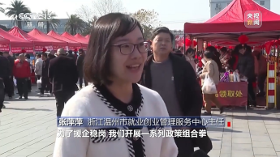
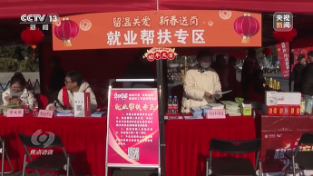
这组内容围绕我国就业保障工作展开，介绍了国家通过“援企稳岗、技能培训、权益保障”的政策组合拳来筑牢就业底线的实践。一方面，各地通过举办专场招聘、稳岗返还等措施帮扶企业和求职者；另一方面，通过技工教育、职业技能培训，以及打造劳务品牌，帮助高校毕业生、农民工等重点群体实现技能就业。同时，政策还向大龄、残疾等就业困难人群倾斜，并为外卖骑手等灵活就业人员提供工伤保险等权益保障，体现了“就业路上，不落一人”的民生温度。
从温州新春招聘会的精准对接，到青海家政技能的免费培训，再到外卖骑手工伤保险的落地，这些政策细节让我们看到了“民生为大”的切实行动。就业不仅是个人生计的保障，更是社会稳定的基石。当技能培训让“00后”工匠走向世界赛场，当灵活就业人员有了“安全感”，我们感受到的不仅是政策的力度，更是国家对每个普通人的关怀。这种“一人就业、全家安心”的温暖，正是高质量发展最生动的注脚。
中国科协办公厅发布《全国青少年科技创新大赛实施办法（试行）》，对赛事进行了大幅改革：参赛对象调整为15至24岁的青少年，不再接受15岁以下低龄选手和科技辅导员参赛；评价机制不再聚焦创新作品，改为注重现场考察选手的知识应用、动手实践等能力；同时建立科学道德审查机制、异常行为名录，对弄虚作假、他人过度参与等违规行为实行“一票否决制”，以保障竞赛的公平公正。
这场改革不仅是参赛年龄和评价方式的调整，更是对“科创竞赛本质”的回归。过去，低龄选手参赛背后常伴随家长过度代劳、作品“移花接木”等乱象，让竞赛偏离了培养青少年创新能力的初衷。如今，通过聚焦适龄群体、强化现场考核、严打学术不端，大赛真正把重心放回了选手的真实能力与科学精神上。这种向“实”而行的调整，不仅能守护竞赛的公平底线，更能让青少年在科创实践中真正收获成长，让“创新”二字不再是成人包装下的光鲜标签，而是年轻人用双手探索出的真实成果。
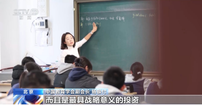
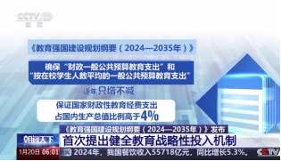
《教育强国建设规划纲要（2024—2035年）》首次提出健全教育战略性投入机制，明确财政投入要做到“两个只增不减”，并将国家财政性教育经费支出占国内生产总值的比例从“不低于4%”提升为“高于4%”。同时，纲要还提出要拓宽经费筹措渠道，如构建校企社协同育人经费筹措机制、发挥教育基金会作用等，将教育定位为具有战略意义的投资而非简单消费。
把教育投入从“底线保障”升级为“战略投资”，不仅是数字上的变化，更体现了国家对教育价值的深刻认知。教育经费的持续增长和多元筹措，让我们看到了国家筑牢强国根基的决心。这种转变不仅能让更多孩子享受到优质教育资源，更能为国家长远发展储备核心竞争力，让教育真正成为驱动民族进步的引擎。
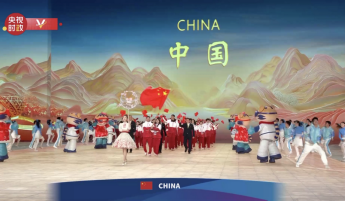
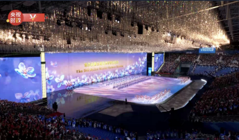
2025年2月7日晚，第九届亚洲冬季运动会在哈尔滨国际会展体育中心隆重开幕，国家主席习近平出席开幕式并宣布本届亚冬会开幕。开幕式上，来自亚洲各地的运动员代表团依次入场，中国代表团最后登场并引发全场热烈欢呼。仪式环节包括国旗入场、升国旗、奏唱国歌、各方致辞等，随后的文艺表演以“冰雪同梦，亚洲同心”为主题，融合了冰城特色与亚洲多元文化，展现了冰雪运动的魅力与亚洲各国携手同行的愿景。
时隔29年，亚冬会再次回到中国、落地哈尔滨，这场开幕式不仅是一场冰雪盛宴，更是一次亚洲团结的温暖相聚。当各国运动员在冰雪之城的舞台上并肩而立，当冰灯、雪花等龙江元素与亚洲文化交织绽放，我们看到的不仅是体育赛事的激情，更是“亚洲同心”的生动实践。从习近平主席宣布开幕的时刻，到火炬点燃的瞬间，每一个细节都传递着中国以冰雪为桥、联结亚洲的诚意，也让世界感受到哈尔滨这座冰雪之城的热情与活力。这场盛会不仅是对中国冰雪实力的展示，更是亚洲各国人民共筑美好未来的见证。
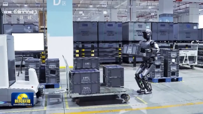
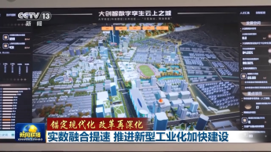
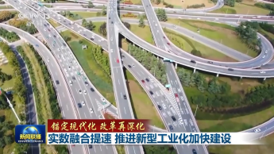
我国正以“实数融合”为核心抓手推进新型工业化建设，各地结合自身优势，推动实体经济与数字经济深度融合。北京推动制造业企业数字化改造与大模型在重点领域的落地；上海建设虚拟城市以实现城市运行的智能监测与预警；全国范围内，一体化算力网络、万兆光网等数字基础设施加快建设，5G基站、移动物联网终端等规模持续扩大，产业数字化水平不断提升。国家还出台了针对中小企业的数字化赋能方案，从生产到销售全流程推动企业数字化转型，为中国式现代化筑牢产业根基。
从北京的工厂里大模型赋能生产，到上海虚拟城市的实时预警，再到全国算力网络的织密，“实数融合”正在让传统工业长出“数字翅膀”。这不仅是技术的迭代，更是发展逻辑的深刻转变——当实体经济不再是“冰冷的机器”，而是与数据、算法深度共生的智能系统，我们看到的是中国产业升级的加速度。这种融合不是简单的“数字叠加”，而是从生产到管理、从城市治理到中小企业赋能的系统性变革，它让工业体系更具韧性，也让中国在全球产业竞争中抢占了新的制高点。在这个过程中，每一个数字化改造的车间、每一个接入算力网络的企业，都是新型工业化的坚实注脚，更是中国经济高质量发展的底气所在。
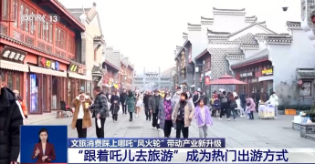
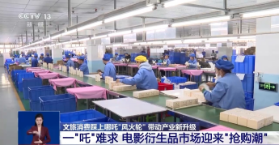
电影《哪吒2：魔童闹海》以超102亿元的票房成为现象级作品，不仅带动“跟着吒儿去旅游”的文旅热潮，还引爆了衍生品市场。天津借影片中的方言元素推出“哪吒”主题文旅线路，客流量增加近30%；河南淇县、山东东陵影视城等多地影视取景地也成了热门打卡点。同时，广东的手办生产厂开足马力满负荷生产，通过升级工艺提升产品质感，相关联名衍生品迎来抢购潮。这一现象形成了“影视+文旅+消费”的联动效应，展现出传统文化IP的强大变现能力和市场影响力。
从影院里的笑声到文旅景区的人流，再到工厂里不停运转的生产线，《哪吒2》的火爆不止是一部电影的成功，更是中国文化IP商业化的一次生动示范。当“陈塘关”的传说走进现实打卡地，当哪吒手办成为年轻人的收藏新宠，我们看到的不仅是票房数字的亮眼，更是传统文化与现代消费的深度共振。这种“影视破圈—文旅引流—消费变现”的链条，让文化不再是束之高阁的符号，而是能走进日常生活、带动产业升级的鲜活力量。它印证了优质文化内容的价值，也让我们看到中国文化产业从“内容输出”到“生态构建”的进阶，正是这种全方位的联动，让“哪吒”的风火轮不仅在银幕上飞驰，更在实体经济的赛道上跑出了加速度。
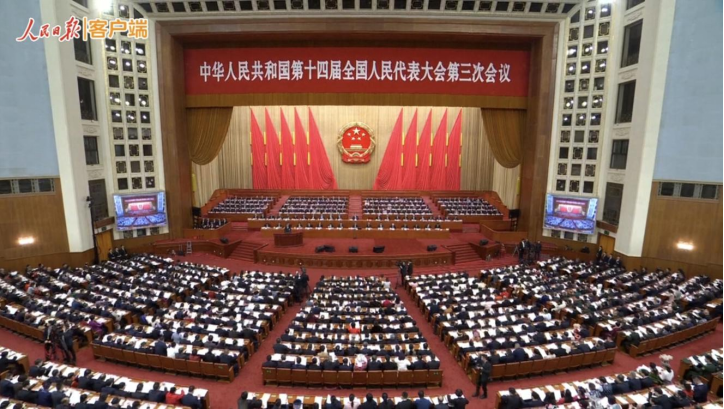
2025年3月4日至11日，十四届全国人大三次会议与全国政协十四届三次会议在北京如期召开，这场年度政治盛会以“锚定民生福祉，共绘发展蓝图”为核心议题，成为牵动全国目光的焦点。会议审议通过的《2025年政府工作报告》，从“稳就业、促消费”的民生兜底举措，到“乡村振兴、科技自立自强”的长远部署，再到“数字经济升级、区域协调发展”的战略布局，每一项政策都紧扣国家发展脉搏与民众生活需求。报告中明确提出“提高城乡居民基础养老金标准”“扩大普惠性学前教育覆盖范围”“优化基层医疗服务体系”等具体举措，让发展红利真正下沉到基层；针对实体经济升级、关键核心技术攻关等议题的讨论，更让各行各业看到了明确的发展方向。此外，会议期间围绕“反制美国贸易霸凌”“维护产业链供应链安全”等议题的发声，彰显了中国在复杂国际格局中的坚定立场。
这场盛会不仅是国家治理的年度答卷，更让我们读懂“人民至上”的深层内涵。从报告里“把保障和改善民生作为一切工作的出发点”的表述，到代表委员们带着基层声音的提案建议，不难发现，国家的发展规划从来不是悬浮于纸面的蓝图，而是与亿万民众同频共振的“民生指南”。当养老金上调、医疗资源下沉的举措被写入政策，我们感受到的是国家对民生温度的坚守；当科技强国、产业升级的部署成为共识，我们看到的是民族复兴的坚实步伐。两会的召开，让全国人民凝聚起“心往一处想、劲往一处使”的共识，也让我们深刻意识到：中国式现代化的进程中，国家的大发展与个人的小幸福从来都是紧密相连的，唯有锚定“人民对美好生活的向往”这一目标，才能让每一份政策落地都成为温暖人心的力量。
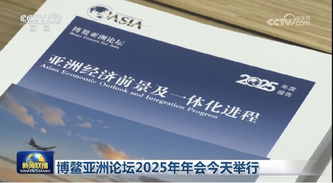
2025年3月25日至28日，博鳌亚洲论坛2025年年会在海南博鳌举行，来自60多个国家和地区的约2000名代表齐聚一堂，以“在世界大变局中重建信任”为核心议题，围绕文明对话、全球南方现代化、人工智能发展、气候变化应对等话题展开深入交流，为亚洲和世界发展汇聚智慧与力量。本届年会期间，多场高端对话、分论坛接连举办，与会嘉宾普遍认为，在世界分裂思潮抬头、全球治理面临挑战的当下，重建信任是开展国际合作的前提，唯有坚定捍卫真正的多边主义，维护以联合国为核心的国际体系，才能推动全球治理朝着更加公正合理的方向发展。年会还发布了多项合作成果，中国在会上公布了一系列扩大开放的举措，从发布《2025年稳外资行动方案》，到批准外资企业经营增值电信业务，再到推动自贸区金融领域制度型开放，以实际行动彰显了中国扩大高水平对外开放的决心。
博鳌亚洲论坛作为亚洲重要的多边合作平台，始终见证着亚洲的发展与世界的变化，本届年会的召开，让我们感受到亚洲各国携手合作、共克时艰的坚定决心，也看到了中国作为负责任大国的担当与作为。如今的亚洲，对全球经济增长的贡献率已达60%，成为世界经济发展的重要引擎，而亚洲的发展，从来不是单打独斗的结果，而是各国秉持互利共赢理念、深化务实合作的成果。在年会的交流中，“包容”“合作”“共赢”成为高频词，这正是当下世界发展的核心诉求，也印证了人类命运共同体理念的时代价值。中国始终是亚洲合作的积极推动者和参与者，从推动“一带一路”建设与亚洲各国发展战略对接，到以自身发展为亚洲乃至世界经济增长注入动力，中国用实际行动诠释着“独行快，众行远”的道理。在世界大变局中，博鳌论坛凝聚的共识与力量，将成为亚洲各国携手前行的重要支撑，也为世界发展注入更多确定性。
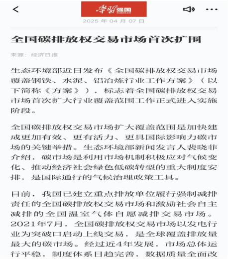
2025年3月26日，生态环境部正式发布《全国碳排放权交易市场覆盖钢铁、水泥、铝冶炼行业工作方案》，并于4月全面启动实施工作，标志着全国碳排放权交易市场迎来首次行业扩围，我国绿色低碳转型迈出实质性步伐。全国碳市场自2021年7月以发电行业为突破口上线交易以来，运行总体平稳，发电行业绿色低碳转型效果逐步显现，全口径电力碳排放强度累计下降8.78%，减排成本降低约350亿元。此次扩围将钢铁、水泥、铝冶炼三大高耗能行业纳入管理，这三大行业年排放约30亿吨二氧化碳当量，占全国二氧化碳排放总量的20%以上，扩围后全国碳市场预计新增1500家重点排放单位，覆盖全国二氧化碳排放总量占比将提升至60%以上，覆盖的温室气体种类也扩大到二氧化碳、四氟化碳和六氟化二碳三类。按照工作部署，我国将分两个阶段推进扩围工作，2024至2026年为启动实施阶段，2027年后为深化完善阶段，通过市场机制倒逼企业加快低碳技术创新，淘汰落后产能。
全国碳市场的首次扩围，是我国利用市场机制应对气候变化、推动“双碳”目标实现的关键举措，让我们感受到国家推进绿色低碳转型的坚定决心，也看到了中国在生态治理中始终坚持科学施策、稳步推进的务实态度。气候变化是全人类共同面临的挑战，推动绿色发展、实现碳达峰碳中和，不仅是中国实现高质量发展的内在要求，更是中国对世界的庄严承诺。钢铁、水泥、铝冶炼作为国民经济的支柱产业，也是碳排放大户，将其纳入碳市场管理，既不是简单的“限产减排”，而是通过市场手段让企业主动走上低碳发展之路，这一举措彰显着我国推动绿色转型的智慧与魄力。从发电行业的先行先试，到三大高耗能行业的逐步纳入，我国碳市场建设一步步走向完善，背后是国家对绿色发展理念的坚守，是对经济社会可持续发展的长远考量。在全球应对气候变化的进程中，中国的碳市场实践为世界提供了可借鉴的中国方案，也让我们坚信，绿色发展终将成为推动人类社会进步的重要力量。
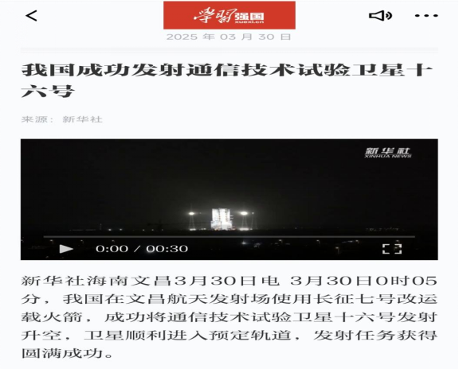
2025年3月30日0时05分，中国在文昌航天发射场使用长征七号改运载火箭，成功将通信技术试验卫星十六号送入预定轨道，此次发射不仅是长征系列运载火箭的第566次飞行，更标志着我国卫星通信技术迈入了高速率、多频段验证的新阶段。该卫星主要用于开展Ka频段、Q/V频段等新型卫星通信技术试验，将为我国后续低轨卫星互联网建设、深空探测通信保障提供核心技术支撑。发射全程通过媒体直播呈现，火箭升空的瞬间，无数网友在评论区刷屏点赞，“中国航天yyds”的词条迅速登上热搜，成为三月最具热度的科技事件。
从“两弹一星”的艰难起步到“嫦娥探月”的跨越突破，从“神舟飞天”的举国欢腾到如今“星链组网”的稳步推进，中国航天的每一步跨越，都是民族精神与科技实力的双重见证。此次卫星发射的成功，不仅是航天人攻坚克难的成果，更是国家科技自立自强的生动注脚。我们看到，航天技术早已走出实验室，融入日常生活：偏远山区的孩子通过卫星信号连上了网课，远洋渔船依靠卫星通信保障了航行安全，灾害现场的救援力量借助卫星数据实现了精准调度。这让我们深刻认识到，科技的进步从来不是为了“炫技”，而是为了让普通人的生活更有保障、更具温度。当火箭刺破苍穹的那一刻，我们感受到的不仅是自豪，更是一种底气——这份底气来自于“把关键核心技术掌握在自己手中”的执着，来自于“为人类探索宇宙贡献中国力量”的担当，更来自于一个民族对未来的无限期许。
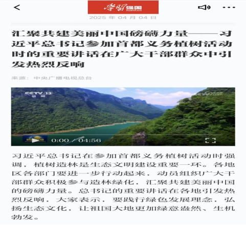
2025年4月3日上午，习近平总书记来到北京市通州区潞城镇参加首都义务植树活动，与干部群众一同挥锹铲土、扶苗浇水，种下白皮松、元宝枫等树苗。总书记在活动中强调，“植树造林是生态文明建设的重要内容，要持之以恒推进义务植树，让祖国大地不断绿起来、美起来”。此次活动引发社会各界广泛响应，各地纷纷开展形式多样的植树造林行动：城市公园内，市民带着孩子种下“亲子树”；乡村山野间，志愿者们为荒山披上绿装；机关单位里，干部职工以植树践行绿色理念。一时间，“植绿护绿”成为全民共识，绿色发展的理念再次深入人心。
从“绿水青山就是金山银山”的理念提出，到“双碳”目标的稳步推进，从退耕还林的生态工程到全民义务植树的持续开展，中国的生态文明建设正在从“理念”走向“实践”。总书记带头植树的行动，不仅是对生态保护的身体力行，更是对全民的生动号召。我们看到，身边的环境正在悄然改变：曾经的荒山变成了林海，浑浊的河水重现清澈，城市的绿地越来越多，乡村的生态越来越美。这让我们深刻认识到，生态文明不是抽象的概念，而是每个人脚下的行动——种下一棵树苗，就是为生态屏障添一块砖瓦；节约一度电、一滴水，就是为绿色发展尽一份力量。当我们亲手栽下树苗，看着它在阳光下生根发芽，感受到的不仅是劳动的喜悦，更是一种责任：美丽中国不是靠少数人建设的，而是需要亿万民众的共同参与，唯有每个人都成为生态保护的践行者，才能让祖国大地永远绿意盎然。
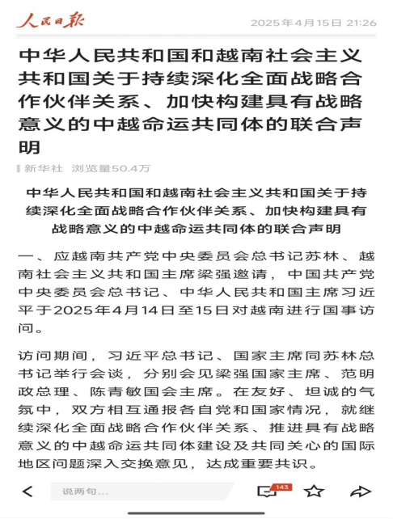
2025年是中越建交75周年，两国以此为契机将今年定为“中越人文交流年”，4月两国发布多项合作共识，从政治互信、经贸合作到人文交流、多边协作，全方位深化中越命运共同体建设，成为周边外交合作的典范。中越两国高层保持密切沟通，就双边关系发展达成重要共识，明确要以建交75周年为新起点，加强战略协作，共同弘扬和平共处五项原则和万隆精神。在经贸合作领域，两国深化在人工智能、半导体、核能等新兴领域的科技合作，落实好中越科技合作协定，在医药卫生、清洁能源、绿色农业等领域开展联合研究；在人文交流领域，中方邀请越南青年来华开展“红色研学之旅”，推动两国优秀视听作品互译互播，深化教育、旅游、文化等领域的交流合作，运营好中越德天（板约）瀑布跨境旅游合作区，让两国民众的联系更加紧密。在多边层面，两国重申坚定维护以联合国为核心的国际体系，共同反对霸权主义和强权政治，推动全球治理朝着更加公正合理的方向发展。
中越建交75周年的合作新篇章，让我们感受到睦邻友好、互利共赢的周边外交理念的生动实践，也看到了人类命运共同体理念在周边国家的落地生根。中越两国山水相连、文化相通、民心相亲，75年来，无论国际形势如何变化，两国始终坚持相互尊重、平等相待、互利共赢，双边关系不断迈上新台阶。从经贸合作的持续深化，到人文交流的日益密切，从边境地区的和谐稳定，到多边领域的协同合作，中越两国的合作成果惠及两国人民，也为地区和平与发展注入了稳定力量。在逆全球化思潮抬头、区域合作面临挑战的当下，中越两国深化全方位合作，既是对两国传统友谊的传承，也是对区域合作共赢理念的践行。这充分证明，国与国之间唯有秉持平等互利、开放包容的理念，加强沟通协作，才能实现共同发展，而中国始终坚持的周边外交方针，正为构建周边命运共同体奠定坚实基础，也为世界各国开展双边合作提供了有益借鉴。
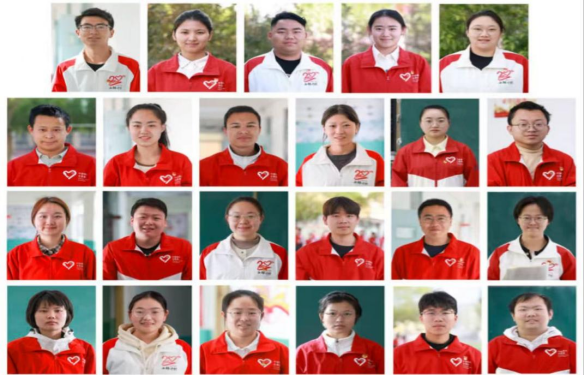
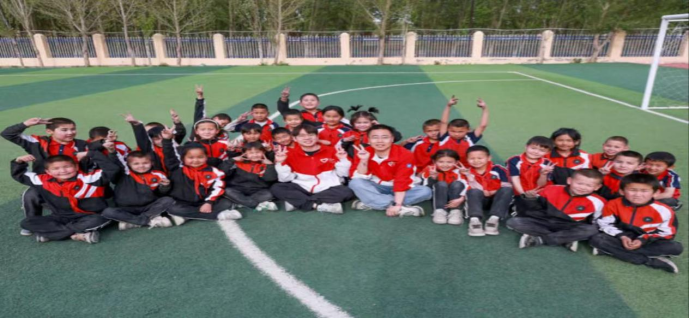
2025年五四青年节前夕，习近平总书记给新疆克孜勒苏柯尔克孜自治州阿图什市哈拉峻乡谢依特小学戍边支教西部计划志愿者服务队全体队员回信，向全国广大青年致以节日祝贺，对志愿者们扎根边疆、教书育人的行动给予高度肯定，并提出殷切期望。这支由23名青年组成的服务队，是克州首个西部计划志愿者包校支教试点团队，自2022年8月起从全国各地奔赴距中吉边境线仅47公里的帕米尔高原，扛起了谢依特小学全部教学任务。面对当地孩子国家通用语言薄弱、文化课底子较差的现状，队员们因地制宜创新教学方式，用津贴添置护眼灯、借昆仑积雪做实验、自制教具、改编课堂形式，还开展2000余次家访，开办各类兴趣班。在他们的努力下，学校班级优秀率从0提升至50%，及格率达96%，多名孩子考入区内初中班，志愿者们也以实际行动促进了当地民族团结，助力稳边固边。收到回信后，队员们备受鼓舞，坚定了继续扎根边疆、以教育点亮孩子未来的决心。
一封回信，纸短情长，不仅温暖了帕米尔高原上的支教青年，更向全体新时代青年指明了奋斗方向，诠释了青春的价值与意义。这些志愿者们告别家乡、奔赴边疆，在风沙与高原中坚守三尺讲台，他们把个人的青春理想融入国家发展大局，用知识与爱心为边疆孩子打开看世界的窗口，这份选择彰显的是当代青年的家国情怀与责任担当。他们没有因环境艰苦而退缩，反而以不服输的劲头破解教学难题，让边疆教育的土壤开出希望之花，生动诠释了“奉献、友爱、互助、进步”的志愿精神，也让我们看到青春的光芒，永远在祖国最需要的地方绽放得最为璀璨。
总书记的回信，既是对戍边支教志愿者的肯定，更是对所有青年的召唤。在时代发展的浪潮中，青年从来都是推动国家进步的生力军，而到基层去、到西部去、到祖国最需要的地方去，正是青年实现人生价值的重要路径。谢依特小学的志愿者们用实践证明，平凡的岗位也能做出不平凡的业绩，个人的微光汇聚起来，就能成为照亮时代的星河。他们在教书育人的同时，也成为了民族团结的桥梁，让青春力量在兴边富民、稳边固边中发挥重要作用，这正是青年与时代同频共振、与祖国同向同行的生动写照。
作为新时代青年，我们当以这些戍边支教志愿者为榜样，坚定理想信念，厚植家国情怀，不贪图安逸、不惧困难挑战，把个人的成长与国家的发展紧密相连。无论是身处繁华都市还是偏远基层，都应练就过硬本领，发扬奋斗精神，在自己的岗位上脚踏实地、发光发热。唯有将个人的“小我”融入祖国的“大我”、人民的“大我”，把青春的汗水挥洒在党和人民最需要的地方，才能让青春在为祖国、为人民的奉献中焕发出更加绚丽的光彩，为中国式现代化建设贡献属于青年一代的磅礴力量。
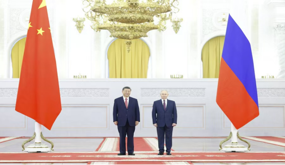
2025年5月7日至10日，在世界反法西斯战争胜利80周年、联合国成立80周年的重要历史节点，国家主席习近平应邀对俄罗斯进行国事访问，并出席纪念苏联伟大卫国战争胜利80周年庆典。此次访问中，习近平主席出席近20场双多边活动，与俄罗斯总统普京进行近10小时深入沟通，双方签署关于进一步深化中俄新时代全面战略协作伙伴关系的联合声明，交换20多份涵盖经贸、能源、数字经济等多领域的双边合作文本，为中俄关系发展注入新动能。两国元首共同在红场观礼阅兵、向无名烈士墓献花，与20多个国家及国际组织领导人一道缅怀反法西斯先烈。访问期间，中俄还发表关于全球战略稳定、维护国际法权威的联合声明，在联合国、上合组织等多边框架的协作达成新共识，同时习近平主席与多国政要会晤，凝聚起捍卫多边主义、抵制强权霸凌的广泛国际共识，此次访问成为传承友谊、捍卫正义、凝聚担当的重要外交行动。
此次习近平主席访俄并出席庆典，是一次回望历史、锚定未来的重要之旅，让我们深刻感受到历史记忆的珍贵与大国担当的重量。80年前，中俄两国作为二战的东西方主战场，以巨大的民族牺牲并肩抗击法西斯，苏联援华航空队、中国战略物资支援的国际生命线，用鲜血铸就了牢不可破的战斗友谊，这份情谊成为中俄关系行稳致远的根基。如今两国元首并肩纪念胜利，正是对历史的敬畏、对先烈的缅怀，更是对历史虚无主义和歪曲二战史实行径的坚定回击，让我们明白捍卫历史真相，就是守护人类和平的根基。
中俄关系的稳步发展，为动荡的世界注入了宝贵的稳定性。此次访问进一步巩固了中俄新时代全面战略协作伙伴关系，两国在经贸上追求结构多元化，在能源、航空航天等传统领域深耕，在人工智能、数字经济等新兴领域探索，不仅实现了互利共赢，更树立了新型大国关系的典范。在国际事务中，中俄始终坚定维护以联合国为核心的国际体系，践行真正的多边主义，共同反对单边主义和霸权行径，这份战略协作让世界看到了大国应有的责任与担当。
当前，世界正处在百年变局的十字路口，和平赤字、发展赤字等问题凸显，此次中俄携手发出的时代强音，为人类未来指明了方向。和平不是战争，合作不是对抗，这是反法西斯战争留给世界的永恒启示。中俄的携手，不仅是两国人民的共同选择，更是顺应世界发展大势的必然之举。作为新时代的青年，我们应铭记历史教训，传承反法西斯的精神力量，树立正确的历史观，更要以实际行动践行和平理念，关注国际局势，努力提升自身能力，在时代浪潮中坚守正义、勇担使命，为推动构建人类命运共同体、共创世界和平未来贡献自己的一份力量。
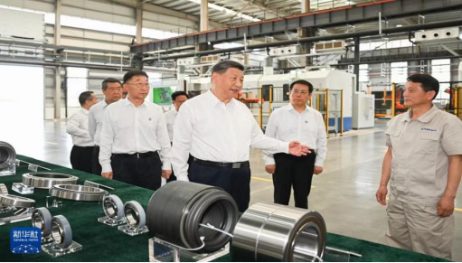
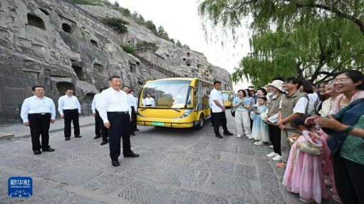
2025年5月19日，国家主席习近平赴河南考察调研，先后走进洛阳轴承集团股份有限公司智能工厂、洛阳白马寺等地点，与企业职工亲切交流，深入了解当地制造业发展、文化遗产保护等情况，并在河南听取工作汇报，对“十五五”规划编制工作作出重要指示。在洛轴智能工厂，总书记回望新中国制造业发展历程，肯定了自主发展工业、制造业的正确道路，同时为制造强国建设指明方向，强调要保持制造业合理比重、大力加强技术攻关。在文化遗产保护现场，总书记叮嘱要将中华文化瑰宝保护好、传承好、传播好，推动文旅产业成为支柱产业、民生产业。针对“十五五”规划编制，总书记提出要把顶层设计和问计于民相统一，各区域立足自身优势发展，取长补短、扬长避短，为下一阶段发展锚定方向。
此次河南考察，既是对制造业发展的实地把脉，也是对文化传承、规划编制的精准指导，处处彰显着立足实际、谋定长远的发展智慧。河南作为中原腹地，既是我国制造业发展的重要阵地，也是中华文化的重要发祥地，总书记的考察行程，将制造业“硬实力”与文化“软实力”的发展紧密结合，道出了中国式现代化物质文明和精神文明相协调的深刻内涵。从洛轴的发展变迁能清晰看到，中国制造业的进步，离不开自主创新、攻坚克难的坚守，唯有牢牢掌握核心技术，才能在国际竞争中站稳脚跟，这也是制造强国建设的核心要义。
而对“十五五”规划编制的指示，更是体现了从实际出发、以人为本的发展理念。顶层设计把握发展大局，问计于民汇聚民智民力，各区域立足自身优势发展，才能避免同质化竞争，让发展更具特色、更有后劲。文化遗产的保护与传承，则让我们看到，发展不仅是经济的增长，更是文化的延续，守护好中华文化瑰宝，才能让民族精神有根可寻、有魂可依。作为新时代青年，我们既要看到国家发展的坚实步伐，更要领悟其中的发展智慧，无论是学习专业知识，还是参与社会实践，都要坚持立足实际、脚踏实地，同时树立文化自信，主动传承和弘扬中华优秀传统文化，以实干担当为国家发展蓝图的落地添砖加瓦。
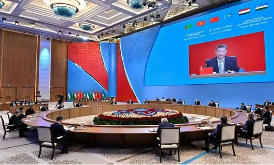
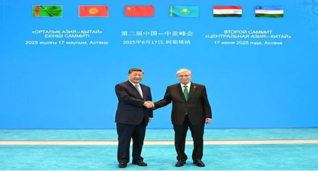
2025年6月16日至18日，国家主席习近平远赴哈萨克斯坦阿斯塔纳，出席第二届中国—中亚峰会，这也是总书记第九次踏上中亚土地、第六次到访哈萨克斯坦。短短不到48小时里，总书记密集出席十余场多双边活动，与中亚五国元首共叙丝路情谊、共商发展大计。此次峰会上，总书记首次系统阐述“互尊、互信、互利、互助，以高质量发展推进共同现代化”的中国—中亚精神，六国元首还共同签署永久睦邻友好合作条约，以法律形式定格世代友好的共识，成为中中亚关系史上新的里程碑。双方达成百余项合作成果，从升级中吉乌铁路打造立体联通格局，到深化教育、卫生、文旅等民生领域交流，再到拓展经贸、能源等领域合作，让中国—中亚合作的底色更浓、路径更宽。
从西安到阿斯塔纳，两届中国—中亚峰会跨越山海，让千年丝路的情谊在新时代持续升温，也让我们看到中国周边外交的温度与力度。中国与中亚五国山水相连、唇齿相依，此次峰会缔结的永久睦邻友好合作条约，不仅将双方的政治互信推向新高度，更让“亲戚越走越近，朋友越交越深”的理念落地生根，生动诠释了什么是真正的互利共赢、命运与共。总书记提出的中国—中亚精神，深深植根于双方友好交往的历史，也为区域合作指明了方向，让中中亚合作不再是简单的利益联结，更是理念相通、目标相近的同向而行。
此次峰会达成的百余项务实成果，更是将合作的红利切实送到各国人民身边。从交通联通到贸易畅通，从民生帮扶到产业协作，每一项成果都紧扣各国发展需求，让中中亚合作成为区域合作的典范。这也让我们深刻认识到，在世界百年变局加速演进的当下，中国始终秉持亲诚惠容的周边外交理念，以实际行动推动周边国家携手发展，让家门口的和平稳定成为共同的追求。作为新时代青年，我们应看到中国在区域合作中的责任与担当，主动了解丝路文化与周边国家发展动态，努力提升自身的国际视野与综合能力，未来以实际行动参与到国际交流与合作中，成为丝路情谊的传承者、中外发展的助力者。
这个仲夏，我国正处在“十四五”规划收官、“十五五”规划谋篇布局的关键节点，总书记围绕中长期规划编制作出的重要指引，成为当下发展的重要遵循。6月16日，《求是》杂志刊发总书记重要文章《用中长期规划指导经济社会发展是我们党治国理政的一种重要方式》，文章回顾我国从1953年开始编制实施14个五年规划（计划）的历程，阐明科学制定五年规划是中国特色社会主义的重要政治优势。6月20日，为期一个月的“我为‘十五五’规划献一策”网上意见征求活动圆满结束，各地也陆续召开会议布局“十五五”发展，让顶层设计与基层智慧充分结合，让五年规划的编制既接天线、又接地气。在复杂的外部环境下，这份对发展的科学谋划，也让中国经济始终保持强大韧性，成为世界经济发展的“稳定源”。
从“一五”计划到即将到来的“十五五”规划，一个个五年的接续奋斗，勾勒出中国发展的清晰轨迹，也让我们看到中国共产党治国理政的智慧与担当。总书记在文章中阐明的五年规划编制理念，道出了中国发展的“方法论”——以中长期规划锚定发展方向，让国家发展始终行稳致远。在全球经济增长预期下调的背景下，中国经济依然能保持稳定发展，正是得益于这份科学的战略规划，得益于一代又一代人沿着规划的蓝图久久为功、接续奋斗。
“我为‘十五五’规划献一策”网上意见征求活动的开展，更是让我们看到五年规划编制中“问计于民、问需于民”的温度。规划的最终目的是为了人民的发展，让群众的声音、基层的经验融入规划编制，让每个普通人都能成为国家发展蓝图的参与者、建设者，这正是中国特色社会主义制度优势的生动体现。从顶层设计的高瞻远瞩，到基层实践的集思广益，这种上下联动的规划编制方式，让“十五五”规划的蓝图更贴合实际、更凝聚人心。作为新时代青年，我们应主动关注国家发展规划，积极为国家发展建言献策，更要立足自身岗位，脚踏实地、笃行实干，将个人的青春理想融入国家发展大局，在实现“十五五”规划的征程中，书写属于青年一代的奋斗答卷。
6月26日我国自主研发的新一代国产通用处理器龙芯3C6000在北京正式发布，这是我国在芯片核心技术领域实现的又一关键突破，为国内信息技术产业自主可控发展筑牢了硬件根基。这款处理器采用我国完全自主设计的龙架构，全程无需依赖任何国外授权技术，从架构设计到核心部件研发均实现国产化自主掌控。作为新一代通用处理器，其性能相较上一代产品大幅提升，可广泛适配服务器、桌面终端、工业控制等多个应用场景，目前已与国内数十家软硬件企业完成产品适配，形成完善的国产软硬件生态体系，将进一步推动我国金融、能源、政务等关键领域的信息化设备国产化替代进程。
龙芯3C6000的成功发布，是我国坚持科技自立自强、攻克核心技术“卡脖子”难题的生动成果，更是国产芯片产业从跟跑、并跑到自主创新的有力见证。芯片作为信息技术产业的“心脏”，其自主可控程度直接关系到国家数字安全和产业发展主动权，长期以来，国外架构授权的限制成为我国芯片产业发展的重要壁垒，而此次龙芯3C6000基于自主龙架构研发成功，意味着我国在通用处理器领域彻底摆脱了对国外技术的依赖，真正掌握了芯片研发的核心话语权。
从自主架构设计到全产业链适配，龙芯3C6000的诞生，背后是科研工作者久久为功的技术攻关，更是我国坚持新型举国体制、推动产学研深度融合的必然结果。这款处理器并非孤立的技术成果，而是与国内众多企业形成了完整的生态体系，这种“芯片研发+生态构建”的发展模式，让国产芯片不再是“孤军奋战”，而是形成了各环节协同发力的产业合力，为我国信息技术产业的高质量发展提供了坚实支撑。
当前，数字经济已成为推动经济社会发展的重要引擎，而核心技术的自主创新是数字经济发展的根本保障。龙芯3C6000的发布，不仅为我国关键领域的信息化建设提供了安全可靠的硬件选择，更向全社会传递出坚持自主创新的坚定信念。这让我们深刻认识到，科技兴则民族兴，科技强则国家强，在国际科技竞争日趋激烈的当下，唯有坚定不移走自主创新道路，瞄准核心技术持续攻坚，才能在科技发展的浪潮中站稳脚跟。作为新时代青年，我们应振奋于国家的科创成就，树立崇尚科学、勇于探索的精神，努力学习科技知识、培养创新思维，未来无论是投身科研攻关还是产业发展，都以实际行动助力我国科技自立自强，为建设科技强国、数字中国贡献青春力量。
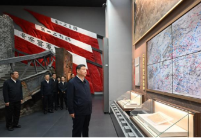
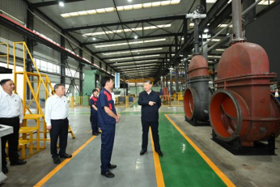
2025年7月7日至8日，中共中央总书记、国家主席、中央军委主席习近平赴山西省考察，并于7月7日下午深入阳泉市。此次考察正值纪念中国人民抗日战争暨世界反法西斯战争胜利80周年与谋划“十五五”发展规划的关键之年，行程融合历史回溯与现实调研，意义深远。
考察首站，总书记前往位于狮脑山的百团大战纪念地。在百团大战纪念碑广场，总书记向烈士敬献花篮，并带领随行人员三鞠躬，深切缅怀革命先烈。在参观百团大战纪念馆时，总书记与现场青少年学生亲切交流，指出“百团大战的历史壮举，充分展现了我们党在全民族抗战中的中流砥柱作用”，并寄语年轻一代要“争做民族的脊梁”。
随后，总书记考察了具有百年历史的阳泉阀门股份有限公司。作为国家级专精特新“小巨人”企业，该公司通过技术创新，在传统阀门制造基础上开发出应用于氢能等领域的高端产品。总书记详细了解企业生产经营情况，并明确指出：“实体经济不能丢，制造业必须筑牢。传统产业改造升级，也能发展新质生产力。”他强调转型升级的关键在于“通过科技创新”，并向员工勉励道：“实业兴国，实干兴邦。”
此次考察是一次精神传承与发展指引的深度融合。在“七七事变”纪念日瞻仰抗战旧址，旨在唤醒和强化以爱国主义为核心的民族精神，从党的伟大精神谱系中汲取奋进力量。同时，考察为以山西为代表的资源型地区转型指明了实践路径：必须坚守实体经济根本，通过科技创新推动传统产业高端化、智能化、绿色化发展，实现“老树发新枝”，并在此过程中牢牢守住安全稳定底线。
2025年7月26日至28日，以“赋能世界 共塑未来”为主题的2025世界人工智能大会暨人工智能全球治理高级别会议在上海举行。大会汇集了全球50多个国家和地区的近2000名代表，规格空前，被视为全球人工智能治理进程中的一个分水岭事件。
大会的核心成果是中国提出的系统性全球治理倡议。国务院总理李强在开幕式上代表中方正式倡议：发起成立“世界人工智能合作组织”（WAICO），并考虑将其总部设于上海。该倡议旨在应对当前全球人工智能治理存在的“治理规则赤字”、“发展普惠赤字”和“安全信任赤字”。构想中的WAICO将致力于成为全球共商、共建、共享的核心平台，深化创新合作、推动普惠发展（特别是帮助发展中国家）、加强协同共治。
与组织倡议配套，大会发布了《人工智能全球治理行动计划》。这份“中国方案”提出了具体行动路径，其四大支柱包括：安全可信（发展安全系统、制定国际标准）、公平包容（遏制数据垄断、帮助发展中国家能力建设）、敏捷治理（建立适应技术迭代的协同治理模式）以及合作共赢（坚持多边主义，支持联合国发挥中心协调作用）。
本次大会标志着中国在全球人工智能治理格局中的角色，正从重要的“参与者”向“倡议者”和“引领者”迈进。倡议的提出把握了全球规则供给缺口的历史机遇，回应了国际社会对公平、有序治理的期待。“上海倡议”旨在搭建一个与现有国际机制互补的增量平台，而《行动计划》则体现了中国“统筹发展与安全”、“在发展中规范”的治理智慧，为未来国际规则谈判提供了兼具原则性与灵活性的重要基础文件。
2025年7月30日，中共中央政治局召开会议，分析研究当前经济形势，部署下半年经济工作。此次会议处于确保“十四五”规划圆满收官和为“十五五”时期谋篇布局的交汇点，具有承前启后的关键意义。
会议首先肯定了上半年经济“总体平稳、稳中有进”的态势，指出“新动能正在加快发展壮大”。同时，会议强调要“增强忧患意识”，直面有效需求不足、部分企业经营困难等重点挑战。
基于此判断，会议对下半年经济工作作出系统部署，核心要义是“稳中求进、以进促稳”，具体聚焦于五大领域：
1.宏观政策强化逆周期调节：要求政策“持续发力、适时加力”，并特别提出要“增强宏观政策取向一致性”，旨在形成推动经济回升向好的强大合力。
2.着力释放内需潜力：将扩大内需置于优先位置，部署提振消费、扩大有效投资，积极培育新的消费增长点，做强国内大循环基本盘。
3.深化关键领域改革：明确提出“治理无序竞争”和“规范地方招商引资行为”，这是纵深推进全国统一大市场建设、破除市场壁垒的实质性举措。
4.扩大高水平对外开放：重申扩大开放，政策着力点在于稳住外贸外资基本盘。
5.有效防范化解重点领域风险：对房地产、地方债务、中小金融机构等风险作出持续部署，统筹发展与安全。
会议传递出深刻的战略信号：其一，发展理念正从“规模扩张”转向“质量优先”，更加依赖科技创新与全要素生产率提升；其二，将“改革”与“发展”更紧密结合，以深化改革破除高质量发展障碍；其三，为“十五五”时期锚定了安全、新质生产力和人的全面发展三大主线。此次会议既为下半年经济提供了“导航仪”，也为长远发展描绘了“路线图”。
2025年8月7日，中共中央办公厅、国务院办公厅印发《整治形式主义为基层减负若干规定》。这份文件的出台，标志着“为基层减负”从一个工作号召，正式升级为一项具有刚性约束力的长效制度，是国家治理现代化的一场深刻实践。
《规定》的出台具有紧迫的现实背景。形式主义问题呈现“隐性化”、“变种化”趋势，如“指尖上的形式主义”、过度依赖工作群组、考核重“留痕”轻实绩等，消耗基层干部精力，损耗治理效能。国家重大战略的落实需要一支“轻装上阵”的基层队伍，而形式主义会消磨干部斗志，影响队伍创造力。
《规定》的核心在于构建覆盖全链条的刚性约束体系，其制度创新主要体现在：
1.源头治理：从上级机关决策部署环节入手，严格控制督查检查考核、文件会议的总量与频次，避免政出多门、层层加码。
2.精准减负：要求区分不同地区和层级的实际，建立科学务实的考核评价体系，引导干部关注解决实际问题和提升群众满意度。
3.技术向善：针对数字工具异化问题，规范政务应用程序和工作群组管理，推动数据共享，让技术服务于减负增效。
4.常态长效：建立健全监督举报、通报曝光、考核问责机制，确保减负规定成为必须遵守的“硬杠杠”。
此项部署具有深远的时代意义。它是践行“以人民为中心”发展思想、推动工作回归服务本源的制度体现；是推动治理模式从粗放式管理向精细化、法治化治理转型的关键一招；是激发基层创新探索活力、为地方发展注入内生动力的基础工程；更是净化基层政治生态、巩固党的执政根基的长远之举。它与加强作风建设的总体要求一脉相承，意味着作风建设正向“标本兼治”、“常态长效”更高阶段迈进。
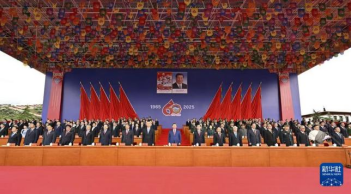
2025年8月20日至23日，以中共中央总书记、国家主席、中央军委主席习近平同志为核心的中央代表团亲赴西藏，出席西藏自治区成立60周年系列庆祝活动。此次活动以“建设美丽幸福西藏、共圆伟大复兴梦想”为主题，是一次对过往成就的盛大礼赞，更是面向未来的全面动员。
8月20日，习近平总书记率代表团抵达拉萨，并深入基层开展慰问。8月21日上午，庆祝大会在布达拉宫广场隆重举行，约2万名各族各界代表出席。
习近平总书记在庆祝大会上发表重要讲话，核心内容包括：
1.高度评价历史性成就：指出西藏“社会制度实现历史性跨越，经济社会实现全面发展，人民生活极大改善，城乡面貌今非昔比”，创造了“短短几十年，跨越上千年”的人间奇迹。
2.系统总结成功经验：强调成就的根本原因在于中国共产党的领导、中国特色社会主义制度和民族区域自治制度的优越性，以及新时代党的治藏方略的正确指引。
3.阐述新时代治藏方略：核心是必须坚持以维护祖国统一、加强民族团结为着眼点和着力点，以改善民生、凝聚人心为出发点和落脚点。
4.擘画未来发展方向：对推动高质量发展、加强生态文明建设、铸牢中华民族共同体意识、全面贯彻党的宗教工作基本方针、加强党的建设等方面提出明确要求。
西藏自治区成立60周年庆祝活动具有多重深远意义：
政治意义：集中展示了中国特色社会主义在民族地区的伟大胜利，证明了民族区域自治制度的成功，巩固了党在西藏的执政根基。
社会意义：以全方位、鲜活的事实，呈现了一个社会稳定、经济繁荣、文化昌盛、生态良好、人民幸福的现代西藏，有力驳斥了各种不实言论。
民族意义：活动处处彰显民族团结，极大地增强了西藏各族人民的“五个认同”，进一步铸牢了中华民族共同体意识。
战略意义：将“稳定、发展、生态、强边”四件大事提升至国家全局战略高度，为西藏的长治久安和高质量发展锚定了方向，激励西藏各族干部群众为建设社会主义现代化新西藏团结奋斗。
2025年8月下旬，国务院常务会议审议通过《“三北”工程总体规划》并部署“三北”工程攻坚战。这项决策将已持续近半个世纪的全球最大生态修复工程，从“持续推进”升级为“攻坚战”，是生态文明建设进入系统治理新阶段的标志性事件。
“三北”工程（西北、华北、东北防护林体系建设工程）规划面积406.9万平方公里，旨在应对风沙危害和水土流失。近五十年来虽成就显著，但生态本底依然脆弱，面临水资源约束、气候变化及传统治理模式瓶颈等挑战。
此次攻坚战部署体现了三大战略升级：
1.战略定位升级：从“重点工程”提升至“国家生态安全攻坚战”，凸显问题的艰巨性与国家层面的坚定意志，要求采取超常规举措，目标建成功能完备的北方生态安全屏障。
2.治理理念升级：核心突破是鲜明提出实行“山水林田湖草沙”一体化保护和系统治理，彻底告别单要素治理思维，强调整体性、协同性与科学性（如以水定绿）。
3.政策体系升级：强调落实综合支持政策，预计将构建包括稳定多元投入、完善科技支撑、生态惠民导向的民生保障以及严格法治考核在内的长效支持体系。
部署“三北”工程攻坚战蕴含着多重国家战略意涵：在生态安全维度，是筑牢中华民族永续发展的根基，保障北方粮食产区与城市的生态安全；在高质量发展维度，通过探索生态产业化、产业生态化，为“三北”这一生态脆弱兼经济滞后区域注入绿色动能；在全球治理维度，是展现中国应对气候变化担当、增强碳汇能力、提供荒漠化治理“中国方案”的实践；在文明实践维度，则是对艰苦奋斗、科学求实精神的弘扬，推动生态文明价值观深入人心。这是一场面向未来的“绿色长征”，考验着国家的战略定力与治理智慧。
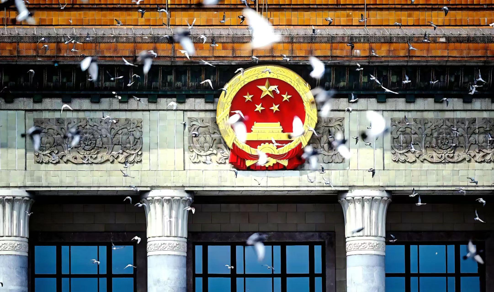
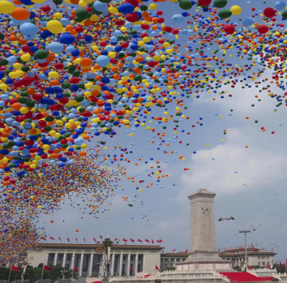
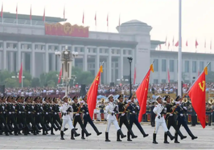
2025年9月3日，北京天安门广场旌旗猎猎，礼炮轰鸣。这场纪念中国人民抗日战争暨世界反法西斯战争胜利80周年的盛大阅兵，以“铭记历史、缅怀先烈、珍爱和平、开创未来”为核心，既是对峥嵘岁月的深情回望，更是新时代中国向世界的庄严宣示——正义必胜、和平必胜、人民必胜。
上午9时，纪念大会正式启幕，习近平主席发表重要讲话后，乘检阅车依次检阅受阅部队。“同志们好！”“同志们辛苦了！”的亲切问候，与官兵们“主席好！”“为人民服务！”的铿锵回应，在长安街上空久久回荡，凝聚起亿万国人的爱国情怀。
本次阅兵时长约70分钟，编设45个方（梯）队，按空中护旗梯队、徒步方队、战旗方队、装备方队、空中梯队的顺序依次亮相，亮点纷呈。空中护旗梯队率先登场，多型直升机组成特色编队，以护卫旗帜、编成字符、悬挂标语的方式，映照出80年岁月沧桑中，国家与军队的蓬勃发展。徒步方队凸显“一老一新”特质：“一老”源自八路军、新四军、东北抗联等抗战老部队，官兵们带着先辈的荣光迈步向前；“一新”则展现“三结合”武装力量体系的新布局，尽显新时代军队风貌。
战旗方队尤为震撼，每一面遴选而出的功勋旗帜，都镌刻着抗战先烈的热血与牺牲，承载着一段可歌可泣的英雄史诗，官兵擎旗受阅，让伟大抗战精神在新时代薪火相传。装备方队按实战化联合编组，陆上作战群、海上作战群、防空反导群等七大作战群依次登场，数百台国产现役主战装备中，首次亮相的新型装备占比极高，包括陆海空基战略重器、高超精打装备、无人与反无人装备等，钢铁洪流尽显我军制胜现代战争的硬核实力。长空之上，预警指挥机、歼击机、轰炸机等组成的空中梯队，基本涵盖现役主战机型，明星装备与首次公开亮相的机型交织，展现空中作战力量的跨越式发展。
此外，联合军乐团在人民英雄纪念碑前奏响《松花江上》《保卫黄河》等抗战经典曲目，14个排面呼应14年抗战历程，80名礼号手致敬胜利80周年，红色旋律穿越时空，让现场观众重温那段艰苦卓绝的岁月。最后，7万羽和平鸽腾空而起，为盛典画上安宁而庄重的句号。
这场阅兵不仅是视觉的震撼，更带来直击心灵的思考，让我们在历史与现实的交汇中，读懂使命与担当。
铭记历史，是对先烈最好的告慰。14年浴血抗战，中国人民以3500万同胞伤亡的巨大牺牲，成为世界反法西斯战争的东方主战场，为全球胜利立下不朽功勋。阅兵中，抗战老部队的身影、功勋战旗的飘扬，都是对这段历史的郑重注解。我们铭记苦难，不是延续仇恨，而是要从历史中汲取力量——唯有不忘过去，才能珍惜当下的和平，不让战争悲剧重演。
强国安邦，是和平最硬的底气。从抗战时期“小米加步枪”的艰难抗争，到如今新型四代装备为主体的体系化作战力量，阅兵场上的每一件装备、每一个方阵，都印证着“落后就要挨打”的历史铁律。本次阅兵是人民军队奋进建军百年的崭新亮相，更是我军“4支军种+4支兵种”新型结构布局的首次集中展示，彰显的不仅是军事硬实力，更是国家经济、科技、文化的综合底气。强大的国力，从来不是为了穷兵黩武，而是为了在风云变幻的国际舞台上，拥有守护和平、捍卫正义的能力。
珍爱和平，是我辈不变的担当。整场阅兵没有剑拔弩张的敌意，反而以和平鸽、抗战经典曲目等元素，传递出中国热爱和平、捍卫和平的真诚愿望。当今世界仍面临局部冲突与动荡，作为普通人，我们虽不必披甲上阵，却可在各自岗位上践行使命：军人坚守边疆、医者救死扶伤、劳动者精益求精、青少年勤学笃行。每个人的微小奋斗，终将汇聚成强国兴邦的磅礴力量，让先烈用鲜血换来的和平，在新时代绽放持久光彩。
80年风雨兼程，抗战精神代代相传；新时代砥砺前行，和平之路矢志不渝。2025年九三阅兵的震撼瞬间，早已定格成民族记忆的重要篇章。愿我们带着这场盛典的启示，铭记历史、珍爱和平、强国有我，在中国式现代化的征程上勇毅前行，让正义与和平的光芒照亮世界每一个角落。
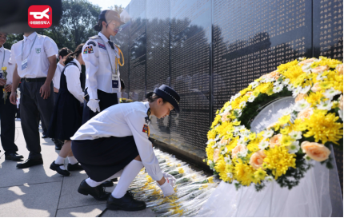
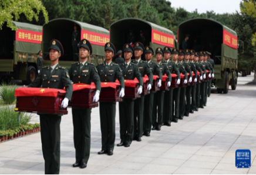
2025年9月，第十二批30位在韩中国人民志愿军烈士遗骸，历经七十余载风雨，在祖国最高礼遇中魂归故土。这是中韩连续12年交接的第1011位志愿军烈士遗骸，每一次归乡，都是国家对英雄的郑重承诺。
最高礼遇，接英雄回家。9月12日，韩国仁川国际机场举行移交仪式，中国大使为烈士棺椁覆盖国旗，礼兵护送棺椁登上运-20“英雄专机”。进入中国领空后，4架歼-20战机编队护航，这是首次以高规格空中礼仪致敬归国烈士。
专机降落沈阳桃仙机场时，“过水门”礼仪洗去征尘，歼-20低空通场致意。30公里的归乡路上，群众自发夹道迎接，挥舞国旗高喊“英雄回家”；95岁志愿军老战士专程赶来，与战友“重逢”在盛世之下。
9月13日，安葬仪式在沈阳抗美援朝烈士陵园举行。《思念曲》中，礼兵将棺椁送入地宫，鸣枪12响致敬，用最庄重的仪式诉说“山河已无恙，英雄可安息”。
此次归乡的30位烈士中，8位通过DNA比对成功寻亲。73岁的方汉炳等待了72年，终于找到父亲方金耀的遗骸，他带着家乡黄土和父亲最爱的油烙饼赴约，完成了跨越三代的团圆。国家用科技为思念搭桥，让每一位英雄都不再无名。
烈士归乡的感动，藏着深刻启示。铭记，是对英雄的最好告慰。七十多年前，19万多名志愿军战士跨过鸭绿江，用血肉之躯守护家国。如今的最高礼遇接迎，正是因为我们从未忘记，今日安宁源于先烈牺牲。
传承，是对精神的最好延续。志愿军“保家卫国、不畏强敌”的精神，在当下依然闪光。军人守边疆、医者救苍生、普通人勤履职，都是对英雄精神的践行。
珍视和平，是对未来的最好承诺。连续12年的遗骸交接，是人道主义的彰显，更是和平的见证。缅怀英雄，更要珍惜和平，让英雄的鲜血不白流。
1011位烈士魂归故土，是承诺，是缅怀，更是力量。愿我们铭记英雄、传承精神，用奋斗守护这来之不易的山河无恙，让英雄精神永远照亮民族前行之路。
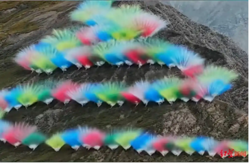
2025年9月，一场名为《升龙》的烟花秀，让国际知名艺术家蔡国强与高端户外品牌始祖鸟陷入舆论漩涡。这场选址喜马拉雅山脉江孜热龙地区的艺术项目，本欲以“探索高山在地文化”为核心，却因生态争议从“艺术致敬”沦为“环保拷问”，成为关乎创作边界与自然敬畏的公共议题。
9月19日下午，海拔4500米的喜马拉雅“查琼嘎日”山脚下，蔡国强团队点燃1050盆烟花，三幕爆破形成腾飞的龙形景观，整个表演历时不足5分钟。作为始祖鸟“向上致美”系列活动第三季，这场被包装为“致敬自然”的艺术行为，现场汇聚了媒体、KOL与摄影师，初衷是通过艺术创作提升对高山文化的关注。
然而，活动视频于9月20日发布后迅速引发全网质疑。公众的核心疑问集中在三点：其一，喜马拉雅地区生态极度脆弱，烟花爆破的巨响是否会惊扰藏羚羊、雪豹等野生动物？其二，1050盆烟花的燃放材料虽宣称“可降解”，但高海拔环境下的残留垃圾与土壤污染如何消解？其三，作为标榜“无痕山林”“敬畏自然”的户外品牌，始祖鸟为何选择在生态敏感区举办此类活动，是否存在商业营销的傲慢？
面对汹涌舆情，双方最初仅强调“材料环保”“初衷正当”，却未提供生态影响评估数据，这种回避态度进一步激化争议。9月21日，蔡国强与始祖鸟相继发布致歉声明，承认“未充分考量高海拔生态的特殊性”，并删除相关宣传视频；同日，西藏日喀则市成立调查组赶赴现场核查，后续于10月15日通报：对蔡国强艺术工作室涉嫌违法行为立案查处，并将依法追究生态环境损害赔偿与修复责任。
这场争议早已超越单一事件本身，折射出当代社会对艺术创作、商业营销与生态保护关系的集体思考，带来三点深刻启示。敬畏自然，是所有创作的底线前提。蔡国强以火药为媒介的爆破艺术早已享誉全球，从北京奥运“大脚印”到泉州“天梯”，其作品始终追求与环境的对话。但此次事件的核心问题在于，将艺术表达置于生态敏感区的脆弱平衡之上——高海拔地区的植被恢复周期长达数十年，野生动物对声响的应激反应可能危及生存，任何“艺术创新”都不应以突破生态红线为代价。真正的艺术致敬自然，不是将自然当作背景板，而是以“无痕”为前提的温柔对话。
商业营销，不能背离价值观共识。始祖鸟作为年入20亿美元的高端户外品牌，其成功源于消费者对“环保、户外精神”的价值认同。但此次事件中，品牌将生态敏感区视为营销秀场，违背了“吃户外的饭，护自然的碗”的基本逻辑。这警示所有企业：商业营销与社会责任必须同频，虚假的环保宣传终将被公众戳穿，唯有真正践行承诺，才能赢得长期信任。
艺术自由，需以责任为边界。从嘉峪关戈壁的“长城延长计划”到故宫的“远行与归来”展，蔡国强的艺术生涯始终在探索自由与边界的平衡。但艺术自由从来不是无底线的放纵，尤其当创作涉及公共空间与生态环境时，更需前置履行审批程序、开展风险评估、征求公众意见。这场争议提醒创作者：真正的艺术高度，不仅在于创意的惊艳，更在于对社会价值与自然规律的敬畏。
5分钟的烟花秀，最终以道歉与查处收场，却为所有人敲响警钟：在生态保护成为全民共识的今天，无论是艺术创作还是商业活动，都不能抱有“偶尔一次无关紧要”的侥幸心理。自然从不是可供随意挥洒的画布，而是需要悉心呵护的共同体。愿此次事件成为一个转折点，让艺术回归“以人为本、以自然为怀”的本质，让商业营销坚守“言行一致”的底线，在创意与责任之间找到真正的平衡，让每一次表达都成为对自然的温柔致敬。
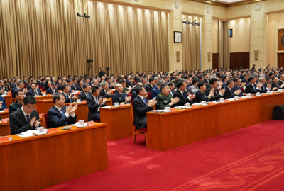
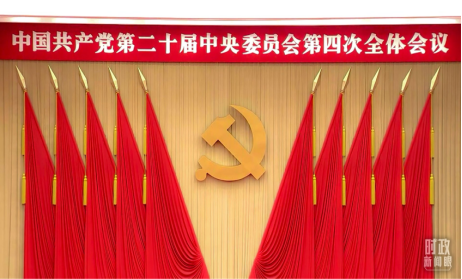
2025年10月20日至23日，中国共产党第二十届中央委员会第四次全体会议在北京胜利召开。这场处于“十四五”收官、“十五五”谋划关键节点的重要会议，审议通过《中共中央关于制定国民经济和社会发展第十五个五年规划的建议》，为基本实现社会主义现代化夯实基础、全面发力，勾勒出未来五年国家发展的宏伟蓝图。
全会由中央政治局主持，习近平总书记发表重要讲话，168名中央委员、147名候补中央委员出席会议。会议充分肯定二十届三中全会以来的工作成效，明确“十四五”主要目标任务即将胜利完成，中国式现代化迈出新的坚实步伐。作为承前启后的关键五年，“十五五”时期被定位为“基本实现社会主义现代化夯实基础、全面发力的重要阶段”，面临战略机遇与风险挑战并存的发展环境。
全会最重要的成果《建议》共15个部分61条，分为总论、分论、保障三大板块，其起草过程充分体现全过程人民民主——通过两轮广泛征求意见，累计吸纳311.3万条公众建言与2112条各方修改意见，吸收率达21.4%，成为凝聚全民共识的纲领性文献。此外，会议还决定增补张升民为中共中央军事委员会副主席，为国家发展与国防建设提供坚强保障。
建议》围绕“十五五”时期发展目标，明确了六大核心任务与民生导向，每一项部署都与国家发展、群众生活紧密相关。经济发展，将“建设现代化产业体系”列为首要战略任务，坚持实体经济为本，推动制造业智能化、绿色化、融合化发展，筑牢制造强国、质量强国根基；科技自立，聚焦高水平科技自立自强，强化原始创新与关键核心技术攻关，推动科技创新与产业深度融合，以新质生产力引领发展新动能；民生保障，部署建设生育友好型社会，推动“老有所养、老有所为”，持续提升人民生活品质，让发展成果更多更公平惠及全体人民；改革开放，坚持扩大内需战略基点，构建强大国内市场，同时推进更高水平对外开放，让中国大市场成为全球创新应用场；生态建设，明确美丽中国建设新目标，持续推进生态环境保护，筑牢可持续发展的生态屏障；安全底线：强化国家安全屏障建设，统筹发展与安全，为经济社会发展保驾护航。
二十届四中全会勾勒的蓝图，既是国家发展的路线图，也是每个人奋进的指南针。坚定制度自信，把握发展主动。从“十四五”的辉煌成就到“十五五”的科学谋划，五年规划的接续实施彰显了中国特色社会主义的制度优势。面对复杂多变的国际环境，我们更应深刻领悟“两个确立”的决定性意义，坚信在党的集中统一领导下，能够集中力量办好自己的事，在风险挑战中赢得战略主动。
锚定民生导向，共享发展成果。《建议》中“人民至上”的理念贯穿始终，从生育友好到养老保障，从高质量就业到品质消费，无不回应着群众的迫切期盼。这启示我们，发展的最终目的是为了人民，无论是政策制定者还是普通劳动者，都应聚焦民生需求，让现代化建设的每一份成果都能落地为群众的幸福感、获得感。
立足本职实干，共筑复兴伟业。“十五五”规划的宏伟目标，需要亿万人民的接续奋斗。科技工作者钻研核心技术，企业经营者坚守实体经济，基层干部扎根民生一线，青少年勤学笃行成长成才——每个人在岗位上的微光汇聚，终将成为推进中国式现代化的磅礴力量。正如全会号召，唯有以历史主动精神迎难而上、实干担当，才能在2035年基本实现社会主义现代化的征程上书写属于这一代人的答卷。
二十届四中全会的胜利召开，为国家发展锚定了新坐标、注入了新动力。从规划蓝图到美好现实，离不开每一个人的奋力拼搏。愿我们以全会精神为指引，坚定信心、锐意进取，在各自岗位上践行使命担当，共同将“十五五”的宏伟蓝图转化为生动实践，为全面推进强国建设、民族复兴伟业而不懈奋斗。
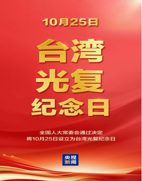
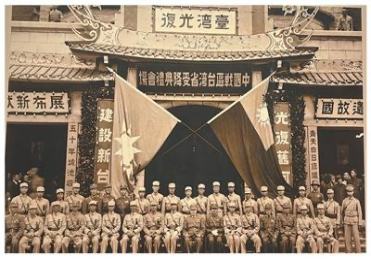
2025年10月25日，秋阳普照，山河肃穆。这一天既是台湾光复80周年的历史节点，更是全国人大常委会设立“台湾光复纪念日”后的首个法定纪念日。北京人民大会堂举行隆重纪念大会，两岸同胞、海外侨胞代表齐聚一堂，共同回望那段血与火的抗争岁月，缅怀先烈忠魂，坚定捍卫国家主权与领土完整的信念，让“台湾是中国不可分割一部分”的历史事实与法理根基愈发坚不可摧。
台湾与祖国大陆的血脉联结，早已镌刻于数千年历史长河。1895年，甲午战争战败后，腐朽的清政府被迫签订《马关条约》，将台湾及澎湖列岛割让日本，开启了长达半个世纪的殖民统治。在这段暗无天日的岁月里，日本侵略者制造“云林大屠杀”等惨绝人寰的惨案，疯狂掠夺资源，推行“皇民化”运动妄图磨灭中华文化根脉，台湾同胞遭受的苦难罄竹难书。
但压迫从未磨灭抗争的火种。从丘逢甲、吴汤兴等志士的武装反抗，到进步青年奔赴祖国大陆投身抗日洪流，台湾同胞始终坚守“与其生为降虏，不如死为义民”的民族气节，50年间牺牲逾65万人，用鲜血书写了“同是中国人、携手护华夏”的爱国篇章。国共两党始终将光复台湾作为共同使命，毛泽东、蒋介石均明确提出收复台湾的目标，极大鼓舞了两岸同胞的斗志。1943年《开罗宣言》、1945年《波茨坦公告》相继明确，日本必须将窃取的台湾、澎湖列岛归还中国，为台湾光复奠定了坚实的国际法基础。
1945年10月25日，台北市公会堂举行受降仪式，中国政府正式宣告“恢复对台湾行使主权”，台湾同胞张灯结彩、欢呼雀跃，重新成为“堂堂正正的中国人”。这一天，标志着中国人民抗日战争暨世界反法西斯战争取得重大成果，洗刷了半个世纪的民族耻辱，成为中华民族史册上永不磨灭的荣光。
2025年10月24日，全国人大常委会审议通过决定，以法律形式将10月25日设立为“台湾光复纪念日”，这一举措彰显了国家捍卫主权领土完整的坚定意志，凝聚了包括台湾同胞在内的全体中华儿女的共同愿望。
次日的纪念大会上，习近平总书记在纪念抗战胜利80周年大会上的重要讲话被再次提及——“台湾惨遭外族侵占，成为全民族的剜心之痛。1945年抗战胜利，台湾光复，才洗刷了半个世纪的民族耻辱”，话语铿锵有力，引发全场共鸣。大会通过史料展播、老兵口述、两岸青年对话等形式，再现了台湾同胞的抗日历程与光复盛况。来自台湾的青年代表林彦辰感慨：“了解这段历史，才更明白两岸同胞血脉相连、荣辱与共，统一是历史大势，更是民心所向。”
与此同时，两岸各地同步举行纪念活动：台北市举办“光复历史影像展”，吸引数万民众驻足；厦门与金门共同开展“两岸同祭英烈”活动，缅怀为光复台湾牺牲的先烈；线上“台湾光复历史知识问答”参与人数超千万，让年轻一代深入了解历史真相。这些活动跨越海峡阻隔，传递着“铭记历史、共护家园”的共同心声。
历史真相不容歪曲，法理事实坚如磐石。“台独”分裂势力妄图炒作“台湾地位未定论”，勾连外部势力破坏两岸关系，本质上是对历史的背叛、对国际法的无视。台湾光复的历史进程、一系列国际法律文件，早已明确证明台湾是中国领土不可分割的一部分，这一事实决不容任何势力篡改。唯有坚守正确历史观，才能识破“台独”分裂的谎言，守护民族共同的历史记忆。
民族大义高于一切，两岸同胞血脉相连。从抗战时期两岸同胞同仇敌忾、共御外侮，到如今携手纪念光复、共谋发展，历史反复证明，两岸是休戚与共的命运共同体。民族弱乱则两岸遭殃，民族强盛则两岸受益。深化两岸交流融合，促进心灵契合，让两岸同胞共享祖国发展成果，是维护台海和平稳定、实现共同繁荣的必由之路。
祖国统一势不可挡，民族复兴必然实现。台湾问题因民族弱乱而产生，必将随着民族复兴而解决。如今的中国，综合国力大幅提升，国际影响力显著增强，有坚定的意志、充分的信心和足够的能力捍卫国家主权和领土完整。设立台湾光复纪念日，正是要向世界宣告：中国终将统一、也必将统一，任何分裂国家的行径都将遭到历史的审判和人民的唾弃。作为中华儿女，我们应坚定民族自信，汇聚团结力量，为实现祖国完全统一、民族伟大复兴而共同奋斗。
80载风雨兼程，80载初心不改。台湾光复的荣光，照亮了两岸同胞携手前行的道路；首个台湾光复纪念日的设立，凝聚了捍卫国家统一的磅礴力量。青史昭昭，故土归邦的真理不容挑战；大势所趋，祖国统一的步伐不可阻挡。愿两岸中华儿女铭记历史、坚守大义，同心同德、携手奋进，让分裂历史不再重演，让民族复兴的梦想早日实现，共同书写中华民族更加璀璨的未来。
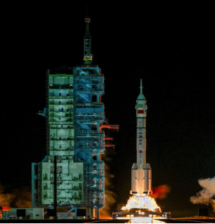
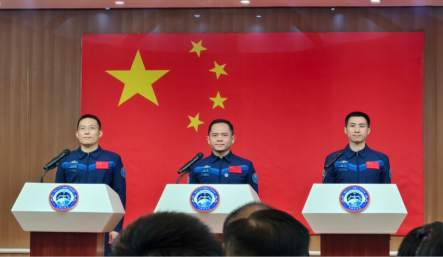
2025年10月31日，酒泉卫星发射中心夜色如墨，烈焰骤然升腾。23时44分，长征二号F遥二十一运载火箭托举神舟二十一号载人飞船直冲苍穹，将指令长张陆、航天飞行工程师武飞、载荷专家张洪章3名航天员送入预定轨道，中国空间站应用与发展阶段第6次载人飞行任务正式开启。从3.5小时快速交会对接的技术突破，到空间站第7次“太空会师”的温情时刻，这场跨越数月的太空征程，既书写了航天事业的新纪录，更凝聚着民族奋进的磅礴力量。
神舟二十一号的任务全程亮点纷呈，每一个节点都彰显着中国航天的硬实力。发射与对接时，速度与精度的双重跨越。火箭升空约10分钟后，飞船与火箭成功分离，随后开启自主快速交会对接模式。经过3.5小时的精准操控，11月1日3时22分，飞船成功对接于天和核心舱前向端口，创造了神舟飞船与空间站交会对接的最快纪录。这一突破源于轨道优化、导引技术升级等多重创新，不仅缩短了航天员在轨等待时间，更提升了空间站任务应急响应能力。
同时，传承与探索的双向奔赴。11月1日4时58分，神舟二十一号乘组顺利进驻空间站，与神舟二十号乘组实现“太空会师”，6名航天员共同工作生活5天，完成在轨轮换与任务交接。此次乘组涵盖70后、80后、90后三个年龄段，包含航天驾驶员、飞行工程师、载荷专家三种类型，既是航天人才薪火相传的缩影，也体现了我国航天员队伍的多元化建设成果。在轨期间，乘组开展27项科学实验，包括首次在轨实施啮齿类哺乳动物实验，4只小鼠的太空饲养与研究，为探索空间环境对生物的影响奠定基础。
12月9日，乘组圆满完成首次出舱任务，在两艘载人飞船停靠的复杂构型下，完成神舟二十号返回舱舷窗损伤评估、空间碎片防护装置安装等关键作业，新款舱外服的4K头盔显示、优化关节自由度等升级功能得到充分验证。11月14日，神舟二十一号搭载神舟二十号乘组返回，首次实施3圈自主快速返回，返回舱在东风着陆场成功着陆，航天员健康状态良好，标志着我国载人返回技术再获新突破。
神舟二十一号的圆满成功，不仅是技术的胜利，更蕴含着照亮前行之路的精神密码。自主创新是航天事业的核心底气。从3.5小时快速交会对接，到新型舱外服、智能算力平台的应用，每一项突破都源于自主研发的坚守。我国航天事业从“跟跑”到“并跑”再到“领跑”的跨越证明，核心技术买不来、讨不来，唯有坚持自主创新，才能在浩瀚太空站稳脚跟。这启示我们，无论身处哪个领域，都要以敢为人先的勇气攻关核心难题，用创新驱动发展。
协同担当是成就伟业的重要支撑。一场航天任务的成功，离不开火箭、飞船、测控、保障等无数系统的密切配合。从发射场工作人员25年的坚守，到遍布全球的测控网络护航，再到地面科研团队的日夜攻关，正是“全国一盘棋”的协同精神，铸就了航天事业的辉煌。这告诉我们，个人的力量有限，团队的合力无穷，唯有各司其职、协同作战，才能攻克艰难险阻，实现共同目标。
逐梦不息是民族奋进的永恒动力。从神舟五号首次载人飞天，到如今空间站常态化运营，中国航天人始终以“特别能吃苦、特别能战斗、特别能攻关、特别能奉献”的精神，向着星辰大海不断探索。神舟二十一号的任务中，既有对过往技术的迭代升级，也有对未知领域的勇敢探索，这种永不止步的追梦精神，正是中华民族伟大复兴的生动写照。作为普通人，我们或许不必奔赴太空，但这种“心怀远方、脚踏实地”的逐梦态度，正是立足岗位、追求卓越的不竭动力。
神舟二十一号的征程已圆满落幕，但中国航天的探索永无止境。从大漠戈壁的点火升空，到浩瀚太空的科研攻关，再到着陆场的平安归来，每一个瞬间都凝聚着智慧与汗水，彰显着信念与担当。愿我们带着航天精神的启示，以创新为翼、以协同为桥、以逐梦为帆，在各自的岗位上勇毅前行，共同书写属于这个时代的奋进篇章，让探索未知、追求卓越的精神永远照亮前路。
11月3日，国务院总理李强在北京同俄罗斯总理米舒斯京共同主持中俄总理第三十次定期会晤。会晤期间，双方全面回顾中俄各领域合作成果，围绕深化经贸投资合作、扩大能源资源开发利用、推进科技联合创新、加强人文交流等重点议题深入交换意见，签署涵盖基础设施建设、农业合作、数字经济等领域的多项联合文件与合作协议，并发布联合公报。此次会晤是中俄新时代全面战略协作伙伴关系的重要实践，为两国各领域务实合作规划了清晰路径，也为全球多边合作注入稳定力量。
中俄总理定期会晤机制已走过多年历程，成为两国沟通协作的重要桥梁，此次第三十次会晤的成功举行，再次彰显了中俄关系的稳定性、成熟度与战略性。在当前复杂多变的国际局势下，单边主义、保护主义抬头，全球经济复苏乏力，中俄坚持相互尊重、平等互利的合作原则，深化多领域务实合作，不仅符合两国人民的根本利益，更为世界各国树立了大国协作的典范。从能源合作的深化到科技领域的联合攻关，从贸易往来的扩容到人文交流的密切，中俄合作始终坚持互利共赢，不针对第三方，也不受外部干扰，这种基于共同利益与战略互信的伙伴关系，为全球治理体系的完善提供了重要支撑。作为负责任的大国，中俄通过会晤凝聚共识、推进合作，既为两国发展创造了良好外部环境，也为维护地区和平稳定与世界经济复苏注入了强劲动力，值得国际社会广泛借鉴与肯定。
11月5日，神舟二十号载人飞船返回舱在东风着陆场成功着陆，航天员乘组身体状态良好，圆满完成各项在轨任务。此次任务中，神舟二十号与神舟二十一号航天员乘组完成了我国首次在轨轮换交接，实现了空间站长期有人照料的常态化运营。值得关注的是，神舟二十号返回舱首次采用3圈自主快速返回技术，大幅缩短了返回时间，提升了航天员返回过程的舒适性与任务效率，标志着我国载人航天工程在返回技术领域取得重大突破，为后续深空探测任务奠定了坚实基础。
神舟二十号航天员乘组的顺利返回，不仅是我国载人航天工程的又一重大成果，更彰显了中国科技自立自强的坚定信念与卓越能力。从神舟五号首次载人飞行到如今空间站常态化运营，我国载人航天事业始终坚持自主创新、勇攀高峰，每一次突破都凝聚着航天人的智慧与汗水。此次3圈自主快速返回技术的成功应用，体现了我国航天工程从“跟跑”到“并跑”再到“领跑”的跨越式发展，让民族自豪感油然而生。在全球科技竞争日趋激烈的今天，航天技术的突破不仅具有重大科学价值，更对我国高端制造业、新材料、人工智能等领域的发展具有极强的带动作用，为高质量发展注入了科技动能。同时，航天人攻坚克难、精益求精的精神，也激励着各行各业的劳动者勇于创新、追求卓越，为实现中华民族伟大复兴的中国梦提供了强大的精神支撑。我们有理由相信，在航天精神的引领下，我国将在更多科技领域取得突破，为人类探索宇宙奥秘、推动科技进步作出更大贡献。
11月中旬，中国外交部宣布多项便利中外人员往来的免签政策调整：一是延长此前对法国、德国、意大利、荷兰、西班牙、马来西亚6国公民实施的单方面免签政策，有效期延长至2026年底；二是新增对瑞典公民实施单方面免签政策，允许瑞典公民持普通护照入境中国后停留不超过15天，用于旅游、商务、探亲等事由。此次政策调整是中方推进高水平对外开放、促进中外人员往来与务实合作的重要举措，进一步简化了相关国家公民入境中国的手续，为全球人员流动与国际交流合作提供了更大便利。
中方此次扩大并延长免签政策，是高水平对外开放的生动实践，彰显了中国与世界各国深化交流合作的诚意与自信。免签政策看似是入境手续的简化，实则是中国融入全球、拥抱世界的重要体现，背后是我国综合国力的提升、营商环境的优化与社会治理能力的增强。在全球经济复苏面临诸多挑战的背景下，人员的自由流动是促进贸易往来、推动科技创新、增进文明互鉴的重要基础。中方通过免签政策为中外人员往来“松绑”，不仅能吸引更多外国游客、商务人士来华，带动旅游、餐饮、住宿等相关产业发展，更能促进中外在经贸、科技、文化等领域的深度交流与合作，实现互利共赢。同时，这一政策也展现了中国开放包容的大国胸怀，让世界看到一个更加自信、更加开放的中国。在单边主义、保护主义有所抬头的当下，中国坚持扩大对外开放，以实际行动推动构建人类命运共同体，为全球经济复苏与国际合作注入了正能量。期待未来有更多国家与中国相互实施免签政策，让人员往来更加便捷，让文明交流更加深入，共同推动世界朝着更加开放、包容、普惠、平衡、共赢的方向发展。
12月4日至5日，国家主席习近平在四川成都同法国总统马克龙举行双边会晤，并共同出席中法企业家委员会会议、中法文化交流活动等。会谈中，两国元首回顾了中法全面战略伙伴关系发展历程，就双边关系及共同关心的国际和地区问题深入交换意见，达成广泛共识。双方一致同意深化经贸合作，扩大航空航天、核能、汽车制造等传统领域合作，拓展数字经济、绿色能源、人工智能等新兴领域合作；加强人文交流，推进教育、文化、旅游等领域互动；在全球治理、气候变化、公共卫生等国际议题上加强协调与配合，共同应对全球性挑战。此次会晤为中法全面战略伙伴关系注入新的活力，推动两国合作迈向更高水平。
习近平主席与马克龙总统的成都会晤，是中法关系发展的重要里程碑，彰显了大国之间相互尊重、平等对话、互利共赢的合作理念。中法作为东西方文明的重要代表，两国关系始终坚持独立自主、相互理解、求同存异的原则，成为大国关系的典范。在当前国际局势复杂多变、全球性挑战日益增多的背景下，中法深化各领域合作具有重要的现实意义与战略价值。经贸领域的全方位合作，不仅能促进两国经济高质量发展，更能为全球经济复苏注入动力；人文领域的深入交流，有助于增进东西方文明的相互理解与包容，推动构建人类命运共同体；在国际议题上的协调配合，能够提升全球治理的有效性，共同应对气候变化、公共卫生等全球性挑战。此次会晤也体现了中国坚持多边主义、推动国际合作的坚定决心，为中欧关系的稳定发展与全球治理体系的完善提供了重要支撑。相信在两国元首的引领下，中法全面战略伙伴关系将持续走深走实，为世界和平与发展作出更大贡献。
12月25日至26日，中共中央政治局召开民主生活会，会议以“深入学习贯彻习近平新时代中国特色社会主义思想，聚焦落实中央八项规定精神、推进作风建设常态化长效化”为主题，中央政治局同志逐一进行对照检查，开展批评与自我批评。会议深入分析了当前作风建设面临的形势与任务，强调要始终坚持以人民为中心的发展思想，持续纠治形式主义、官僚主义，坚决反对特权思想与特权现象，以优良作风凝聚党心民心、推动事业发展。会议为2026年党风廉政建设与作风建设定调，明确了持续深化全面从严治党、推进自我革命的实践路径，为全党树立了标杆、作出了示范。
中共中央政治局召开民主生活会，聚焦作风建设、开展批评与自我批评，充分彰显了中国共产党勇于自我革命、从严管党治党的坚定决心与政治自觉，让人深感振奋与安心。作风建设关系人心向背、关系党的生死存亡，中央政治局以身作则、率先垂范，为全党树立了榜样，体现了我们党始终保持先进性与纯洁性的政治追求。在全面建设社会主义现代化国家的关键时期，面对复杂的国内外形势与艰巨的改革发展任务，优良的作风是凝聚民心、推动实干的重要保障。会议强调持续纠治形式主义、官僚主义，坚决反对特权思想与特权现象，直击作风建设的重点与难点，彰显了我们党坚持问题导向、勇于直面问题的政治勇气。通过民主生活会这一重要制度，中央政治局同志主动检视自身问题、开展相互批评，有助于及时发现并解决作风建设中的突出问题，确保党始终保持同人民群众的血肉联系。作为普通民众，我们能深刻感受到全面从严治党带来的变化：干部作风更务实、服务更高效、干群关系更密切。相信在中央的坚强领导下，随着作风建设常态化长效化推进，我们党将凝聚起更强大的力量，带领全国人民攻坚克难、奋勇前进，为实现中华民族伟大复兴的中国梦提供坚强的政治与作风保障。
12月26日，西安至延安高速铁路正式开通运营，线路全长299公里，设计时速350公里，途经西安、渭南、铜川、延安等城市，将陕北革命老区与关中平原紧密连接，结束了陕北地区不通高铁的历史。与此同时，随着西延高铁的开通，我国高铁运营里程正式突破5万公里大关，形成了覆盖全国主要城市群、连接主要经济区的高速铁路网络。西延高铁的开通不仅大幅缩短了陕北地区与中心城市的时空距离，便利了沿线群众出行，更能带动沿线旅游资源开发、产业转型升级与区域经济协调发展，为革命老区振兴发展注入强劲动力。
西延高铁的开通与我国高铁运营里程突破5万公里，是交通强国建设的重大里程碑，彰显了中国基建的硬核实力与创新活力，让每个中国人都倍感自豪。高铁作为我国一张亮丽的“国家名片”，从无到有、从追赶到领跑，短短十几年间实现了跨越式发展，不仅改变了人们的出行方式，更深刻影响了我国的经济社会发展格局。5万公里的高铁网络，如同一条条“经济大动脉”，连接起城市与乡村、东部与西部、沿海与内陆，促进了人员、物资、信息的快速流动，为区域协调发展、城乡融合发展提供了坚实支撑。西延高铁的开通，更是体现了交通建设对革命老区振兴发展的重要意义，将陕北革命老区纳入全国高铁网络，不仅能便利沿线群众出行，更能带动红色旅游资源开发、特色产业发展，助力革命老区实现高质量发展，让革命精神在新时代焕发出新的活力。高铁里程的不断突破，背后是我国在铁路技术、工程建设、运营管理等领域的持续创新与积累，体现了我国集中力量办大事的制度优势与精益求精的工匠精神。在未来，随着高铁网络的不断完善，必将为我国经济社会高质量发展提供更加强劲的支撑，让人民群众的出行更加便捷、生活更加美好，也为全球交通基础设施建设提供中国方案与中国智慧。
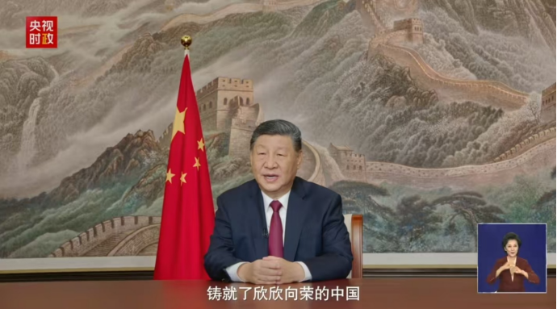
2026年1月1日，国家主席习近平通过中央广播电视总台和互联网发表新年贺词，回顾过去一年中国在经济社会发展、科技创新、国际合作等领域取得的重大成就，展望新一年的奋斗目标和方向。习近平强调，新的一年是实施“十四五”规划的关键之年，要坚持以人民为中心的发展思想，扎实推进共同富裕，加快构建新发展格局，着力推动高质量发展。他呼吁全国各族人民团结一心、奋发有为，共同书写中国式现代化新篇章，为世界和平与发展贡献更多中国智慧和中国力量。
习近平主席的新年贺词温暖有力、鼓舞人心，不仅总结了过去一年中国在复杂国际环境中稳中求进的重大成就，更为新一年的国家发展与社会进步指明了方向。贺词中体现的深厚人民情怀与坚定发展信念，彰显了中国共产党的初心使命与中国特色社会主义制度的显著优势。在当前全球经济复苏仍面临不确定性的背景下，中国坚持高质量发展、推进共同富裕的决心，为国内市场注入稳定预期，也为世界经济提供了重要增长动力。贺词中关于“携手新征程，共赴现代化”的号召，凝聚起全社会团结奋斗的广泛共识，激励着亿万人民在各自岗位上砥砺前行。这既是一份面向全国人民的动员令，也是向世界传递的中国信心与中国担当，预示着在新的一年里，中国将继续以自身发展为世界带来更多机遇与正能量。
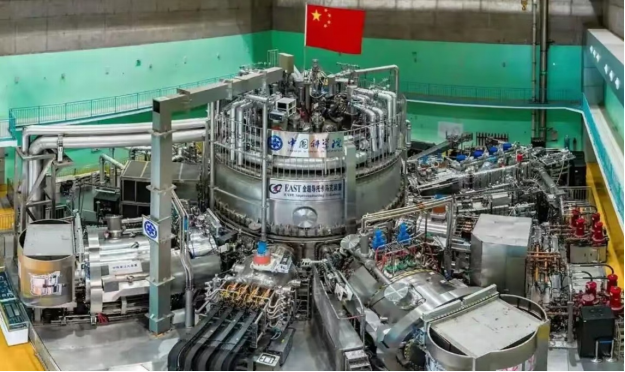
2026年1月15日，位于安徽合肥的全超导托卡马克核聚变实验装置（EAST）在最新一轮实验中成功实现高温等离子体100秒稳态运行，刷新世界纪录。该突破标志着我国在可控核聚变能源开发领域取得重大阶段性进展，为未来建造聚变工程实验堆奠定了关键技术与实验基础。可控核聚变被视为解决人类能源问题的终极途径之一，此次长时间稳态运行的实现，是我国在面向国家能源长远战略、推动前沿基础研究方面的又一重大成果。
中国在可控核聚变领域取得的这一突破，不仅是科技自立自强的生动体现，更是面向未来能源安全的战略布局。核聚变能源具有清洁、高效、资源丰富等优势，实现可控核聚变商业化应用对人类可持续发展意义深远。我国科研团队长期坚持自主创新、潜心攻关，此次实现100秒稳态运行，标志着我国在等离子体控制、加热、诊断等关键技术上已跻身世界前列。这一成就的背后，是国家对基础研究和战略科技领域的高度重视与持续投入，也是广大科技工作者艰苦奋斗、协同攻关的智慧结晶。在全球能源转型与碳减排压力日益增大的背景下，中国在核聚变领域的进展为全球能源科技合作与绿色未来注入了新的希望。随着相关技术的不断成熟与迭代，我国有望在清洁能源领域塑造新的竞争优势，为推动构建人类命运共同体提供坚实的科技支撑。
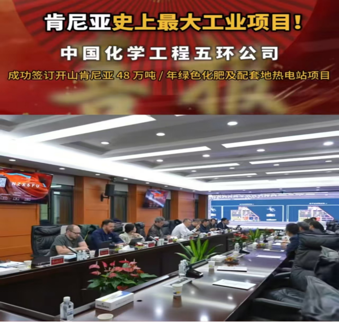
2026年1月22日，由中国企业承建的肯尼亚光伏储能一体化项目在肯尼亚基里尼亚加正式动工。该项目是“一带一路”框架下中非绿色能源合作的重点工程，规划建设总容量300兆瓦的光伏电站及配套储能设施，建成后将成为东非地区最大的光伏储能项目，可有效缓解当地电力短缺问题，促进能源结构绿色转型。项目坚持本地化运营与技能培训，将为当地创造大量就业岗位，并带动相关产业链发展。启动仪式上，中肯双方代表均表示，该项目是两国共建“一带一路”、深化南南合作的重要成果，体现了共同应对气候变化、推动可持续发展的坚定承诺。
该项目的启动是“一带一路”合作迈向绿色化、可持续化的又一标志性实践，彰显了中国在推动全球能源转型与气候治理中的负责任角色。在应对气候变化成为全球共识的今天，中国积极推动绿色能源技术、装备与标准“走出去”，帮助发展中国家提升清洁能源供给能力，不仅促进了当地经济社会发展，也为全球能源公平与低碳转型作出了实质性贡献。此次肯尼亚光伏储能项目采用中国先进的光伏技术与储能系统，体现了中国在新能源领域的全产业链优势与工程能力，是“中国制造”与“中国方案”在非洲大地上的生动落地。项目注重本地化参与和能力建设，真正实现了互利共赢、共同发展，为高质量共建“一带一路”树立了绿色标杆。在单边主义、能源保护主义有所抬头的国际形势下，中国坚持开放合作、共享发展机遇，通过实际行动推动构建人与自然生命共同体，展现了真正的大国担当与合作精神。